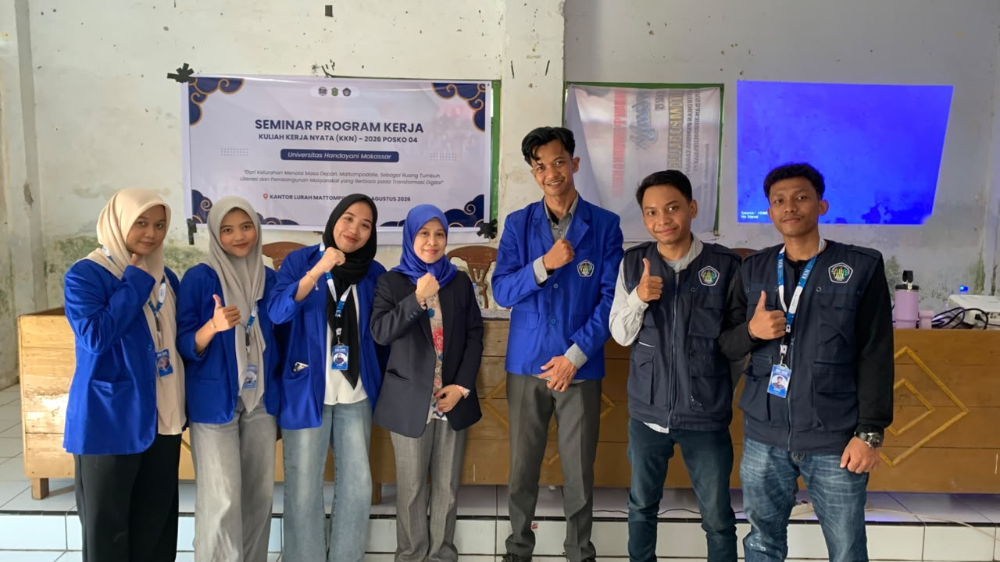
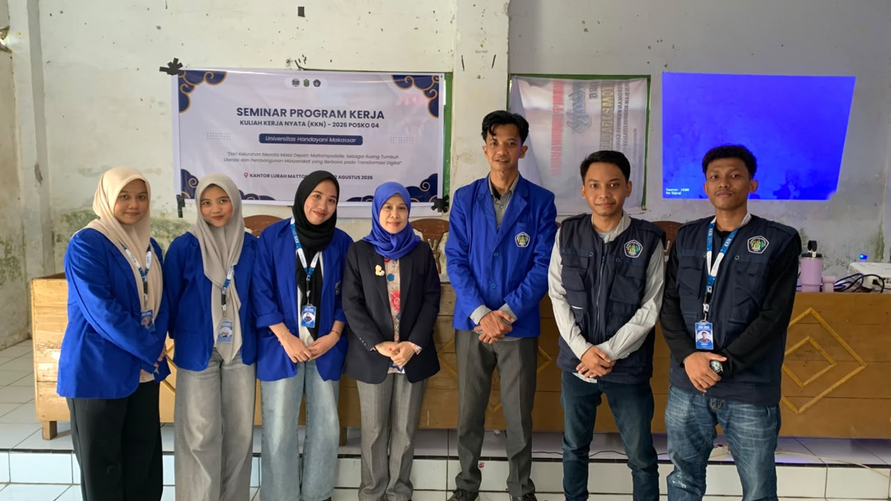
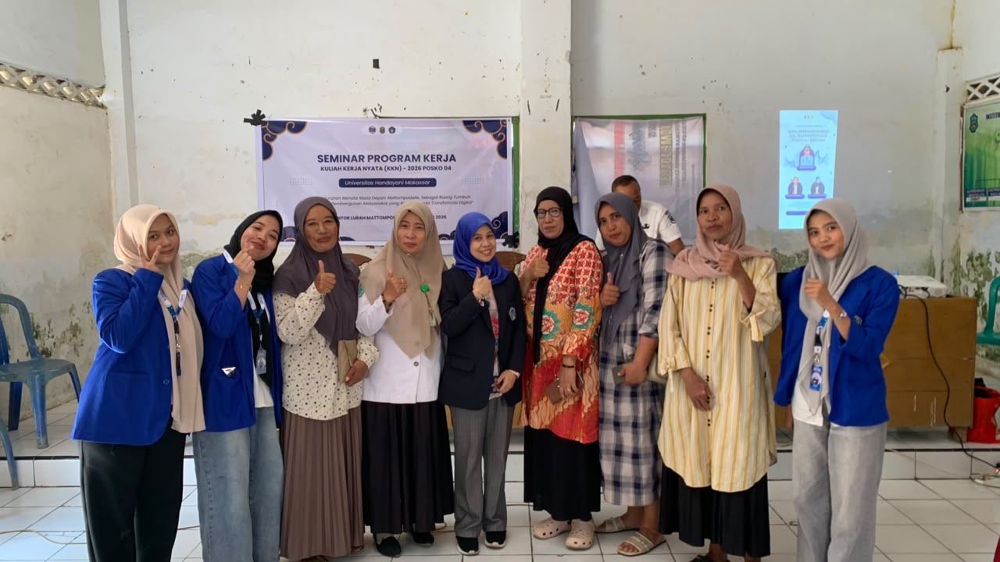
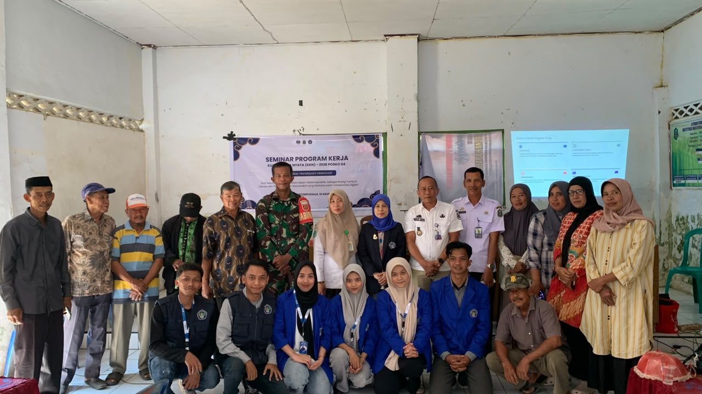

Pemaparan program kerja oleh mahasiswa KKN di Kelurahan Mattompodalle
Mahasiswa Kuliah Kerja Nyata (KKN) Angkatan 26 Posko 4 Universitas Handayani Makassar (UHM) telah menyelenggarakan Seminar Program Kerja di Kelurahan Mattompodalle. Kegiatan ini dihadiri oleh tokoh masyarakat, perangkat kelurahan, dan warga setempat.
Pemaparan Program Kerja
Tujuan utama dari seminar ini adalah untuk mempresentasikan rancangan program kerja yang akan dilaksanakan selama masa pengabdian masyarakat di Kelurahan Mattompodalle. Melalui seminar ini, tim KKN juga mengharapkan masukan serta dukungan penuh dari masyarakat setempat agar program yang dicanangkan dapat berjalan dengan lancar dan memberikan manfaat yang berkelanjutan.
Berikut adalah daftar program kerja yang dipaparkan dalam seminar:
- Pembuatan Website Dokumentasi: Merancang dan membangun website dokumentasi KKN.
- Pembuatan Website Kelurahan Mattompodalle: Membangun website profil kelurahan.
- Pembuatan Website Profile SD 168 RAMANGTANNGAYA: Membangun website profil sekolah.
- Pembuatan Website Profile SD 48 Manuju: Membangun website profil sekolah.
- Pembuatan Website Profile Fasilitas Kesehatan: Membangun website profil fasilitas kesehatan Kelurahan Mattompodalle.
- Pendataan UMKM: Mendata pelaku UMKM di Kelurahan Mattompodalle.
- Pemetaan Wilayah: Pembuatan peta spasial & batas wilayah kelurahan.
- Literasi Digital: Peningkatan skill software & etika IT pada guru serta siswa.
- Pengenalan Profesi: Program mengajar guna menambah wawasan & kreativitas siswa.
- Khutbah Jumat: Berpartisipasi pada kegiatan ibadah & syiar keagamaan.
- Semarak HUT RI: Berpartisipasi pada kegiatan sosial dan lomba untuk memeriahkan 17 Agustus.
- Penyuluhan Hukum: Mengedukasi masyarakat terkait hukum media sosial & legalitas.
"Melalui program kerja yang telah dipaparkan, kami berharap dapat memberikan kontribusi nyata bagi masyarakat Kelurahan Mattompodalle dan meninggalkan jejak positif yang berkelanjutan." — Tim KKN Posko 4
Dokumentasi Kegiatan


